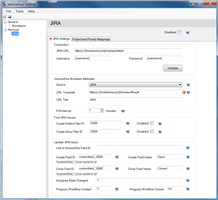
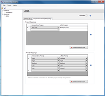

VersionOne IssueSync for JIRA
Introduction
VersionOne IssueSync for JIRA (formerly known as the VersionOne Integration for JIRA) creates Stories and Defects in VersionOne based on Issues orginating in JIRA. Using this integration, your organization can manage and triage issues reported by customers and promote them to VersionOne for the product team to address.
Contents
- Description
- System Requirements
- Download
- Upgrade
- Install
- Configure
- Run Integration
- Troubleshoot
- Technology
Description
For agile development teams using JIRA and VersionOne, and who need to integrate their issue management with agile project management, VersionOne IssueSync for JIRA is an integration that transforms JIRA Issues into Workitems (Defects or Stories) in VersionOne. Using this integration, an organization can manage and triage issues reported by customers and promote them to VersionOne for prioritization, estimation, planning, and implementation. When the work is completed in VersionOne, the integration updates JIRA to reflect the resolved status.
Once the integration is installed and configured, JIRA users can specify which issues require engineering attention and those issues will automatically appear as Workitems in VersionOne. Additionally, when the Workitems are closed in VersionOne, the integration updates the JIRA Issue to reflect this change. JIRA issues that require engineering attention are identified using JIRA filters.
The following sequence diagram illustrates how the integration interacts with JIRA and VersionOne.
title VersionOne IssueSync for JIRA participant JIRA User participant JIRA participant Integration participant VersionOne participant VersionOne User alt Create workitem flow JIRA User->JIRA: Creates issue JIRA->Integration: Issues for VersionOne? Integration->VersionOne: Create workitem Integration->JIRA: Set status to "IN PROGRESS" end alt Close workitem flow VersionOne User->VersionOne: Closes workitem VersionOne->Integration: Closed workitems? Integration->JIRA: Set status to "RESOLVED" end
System Requirements
- Integration
- The integraton can be run on any Windows operating system that supports .NET Framework 4.5.1. Download available here: http://www.microsoft.com/en-us/download/details.aspx?id=40773.
- VersionOne:
- 14.0 and higher, all editions. 15.0 or higher if using access tokens for VersionOne authentication.
- A member account with a Team Member project role or higher permissions.
- JIRA:
- Versions 5.2 and 6.0 or higher. Integration with older versions of JIRA may work, but are no longer supported by VersionOne.
Download
The latest version of the integration is available in the VersionOne Application Catalog.
Upgrade
If you already have the integration running in your environment, you should backup the existing integration before installing the current version.
Install
These installation instructions assume that JIRA and VersionOne are already installed and working properly.
- Determine Install Location
The integration can be installed on any Windows system with HTTP access to both VersionOne and JIRA. Exact placement should be determined by your internal software management requirements. The integration system must meet the System Requirements stated above.
- Extract Files
Download the integration using the link above and extract it into a folder of your choice.
- Configure
Configuration for the Integration is a 3 step process.
- Configure JIRA
- Configure VersionOne
- Configure Integration
Configure
Configure JIRA
This section describes how to modify your JIRA instance for use with the integration. Before you begin, you need decide if you want to the Assign or Label method to indicate the JIRA issues you want visible in VersionOne.
- Select or Create a JIRA User
The integration requires a valid JIRA User ID and a Password in order to connect to JIRA. This user must have sufficient rights to accept work and modify issues (i.e. must be assigned to the Developer Role on the project). This user must also have rights to the actions being performed by the integration (for example, the user must have rights to close Issues).
Although the integration does not require administrator access to run, there are some validation rules that can only be checked with a JIRA Administrator role. To help check first-time configuration, the recommended approach is to elevate the integration user to Administrator. After the integration has been verified (start the integration in the below steps) and before starting as a service (install as Windows Service in the below steps), reduce the JIRA access to the Developer Role. Then you can safely ignore log warnings about validation rules that require administrator access.
- Create Filters for Defects and Stories
These filters must be available through the credentials used by the integration; hence, it is recommended that you create these filters using the same credentials to avoid the complexity of shared filters.
The results of a JIRA filter are used to determine which JIRA Issues will be transferred to VersionOne. By using a JIRA filter, you can make the integration fit with your existing JIRA workflow and fields. The details of writing such a filter are beyond the scope of this document; however, the following are some simple examples.
- Type and Status Filter
The simplest Filter is to move all JIRA Issues of a certain type and state to VersionOne.

- Assigned User
Filter
If only a subset of JIRA Issues of a type and status should be moved, then you may want to create a Filter that transfers all JIRA Issues that are associated with a specified user.

This method is not supported when integrating with JIRA 5.2 or earlier.
- Label Filter
Another method of transferring only a subset of JIRA Issues of a type and status would be to create a Filter that transfers all JIRA Issues that are labeled with "versionone" or some other value you or your organization designates.

Please note that the label value must already exist on an Issue in order to create this type of Filter.
- Custom Field or Combination
If the JIRA fields above would conflict with existing workflow, you may want to create a Custom Field and use it as part of the Filter.

- Type and Status Filter
- Create a Custom Field to hold the URL to the VersionOne Workitem.
By default the integration puts the VersionOne Workitem information in the "Comments" section of the Issue. This information includes a URL to the VersionOne Workitem. You may optionally add another field to hold this data as necessary. To do this create the JIRA Custom Field and note the 'fieldId' value in the JIRA URL. This value is available to the JIRA Administrator.


Configure VersionOne
Skip this step if you are configuring a VersionOne Team Edition instance.
- Add "JIRA" to Source of the Global List Types:

- Determine where to store the JIRA ID
The integration needs a text field in VersionOne to store the JIRA identifier; by default this is the Reference field. If you are already using this field, you'll need to create a custom text field in VersionOne and note the name.

Configure Integration
To configure the JIRA integration you need to run the ServiceHost
configuration tool:
ServiceHostConfigTool.exe
The following section describes how to configure the integration using the configuration tool.
- On the General tab specify your VersionOne connection
details:

The following table describes the fields on this tab:
Field Description Authentication The API authentication method used by the integration to connect to the VersionOne server. Access Token The access token generated for the VersionOne member account that the integration will use. Server URL This is the URL to your VersionOne server. Username VersionOne user that will create Workitems (Defects and Stories), used only when not using an access token. Password Password for the specified VersionOne user, used only when not using an access token. If there's a proxy between this machine and the VersionOne instance, you'll also need to configure the following settings:
Field Description Use Proxy For Connection Determines if the integration tries to connect through a Proxy. Proxy URL This is the URL to your Proxy Server. Proxy Username The username that will get you past this Proxy. Proxy Password The password for the Proxy Username. Proxy Domain Name of the Proxy Domain. - Once the VersionOne parameters are specified, press the Validate button to continue. You should see a "VersionOne settings are valid" message appear before you can advance to the next step.
- In the Workitems section, specify the VersionOne field that will hold the JIRA ID.
The following table describes the fields on this tab:
Field Description Reference Field Name VersionOne field used to hold JIRA ID; by default this is the Reference field. If you created a custom field in VersionOne for this value, enter it here. Disabled Check this box to disable polling VersionOne for Workitem updates. - On the JIRA tab specify your JIRA connection details
and the Issue transfer behavior.
- Configure the JIRA connection
Field Description Disabled Check this box if you want to disable polling JIRA for new Issues. JIRA URL Fully qualified URL to your JIRA instance. Don't forget /rest/api/latest
Username Valid JIRA user. This user must be able to see and update Issues in the appropriate projects. Password Password for specified user. - Click the Validate button to ensure the connection parameters are correct. You should see a "Connection settings are valid..." message appear as confirmation.
- Configure VersionOne Workitem attributes
Field Description Source Select the VersionOne source value to use for JIRA.
VersionOne Team Edition contains a Source value of "External System".
URL Template Template for URL to access specific Issue in JIRA. /browse/#key# is replaced with the JIRA Issue ID. This field is used to create links from VersionOne to JIRA. URL Title This field is the Link title in VersionOne. - Configure Poll Interval
Field Description Poll Interval Determines how frequently the integration polls JIRA looking for issues in minutes. - Configure Find JIRA Issues
Field Description Create Defect Filter ID JIRA identifier for the filter used to determine which issues are pushed to VersionOne as Defects. This field cannot be empty. Create Story Filter ID JIRA identifier for the filter used to determine which issues are pushed to VersionOne as Stories. This field cannot be empty. - Configure Update JIRA Issue
Field Description Link to VersionOne Field ID Custom Field Id in JIRA used to hold VersionOne URL. If blank, the URL will be created in the Comments field in JIRA. Create Field ID Name of the JIRA Custom Field to update after a Workitem is created in VersionOne. If left blank, the JIRA Issue Status field will be updated. Create Field Value Value to set in "Create Field ID" after a Workitem is created in VersionOne. If left blank, the JIRA Issue Status field will be updated to IN PROGRESS. Close Field ID Name of the JIRA Custom Field to update after a VersionOne Workitem is closed. If left blank, the JIRA Issue Status field will be updated. Close Field Value Value to set in "Closed Field ID" after a the VersionOne Worktiem is closed. If left blank, the JIRA Issue Status field will be updated to RESOLVED. Assignee State Changed The name of the JIRA user to assign to the Issue once it's closed in VersionOne. A value of -1 will cause JIRA to set the assignee based on workflow rules. Progress Workflow Created The JIRA Workflow Transition ID to set once it's created in VersionOne. Progress Workflow Closed The JIRA Workflow Transition ID to set once it's closed in VersionOne.
- Configure the JIRA connection
- Map your Projects
Project Mapping allows you to specify where Workitems are created in VersionOne. The algorithm for selecting a project is as follows: First, the integration looks for the JIRA Project Name in the map. If it exists, the Workitem is created in the corresponding VersionOne Project. If the JIRA Project Name is not found, the integration attempts to find a VersionOne Project with the same name. If found, the integration creates the Workitem in the VersionOne Project with a matching name. If it cannot find a VersionOne Project with a name that matches the JIRA Project, the integration will create the Workitem in the root level node of the VersionOne Project Tree or in the first project in the list if there are multiple top level nodes.
To add a Project Mapping you need to do the following:
- Click on the Project and Priority Mappings tab
- In the Project Mapping grid, select a VersionOne Project value from the dropdown list.
- Supply the corresponding JIRA Project name.
- To remove a mapping: Select the desired row.
- Click the Delete selected row button
- Map your Priority Values
Priority mapping allows you to configure how the VersionOne Workitem priority value is set based on the JIRA Priority value. The algorithm for mapping is simple, if the JIRA Priority value is in the mapping, the VersionOne Workitem priority value is set to the mapped value. If the JIRA Priority value is not found, the VersionOne Worktiem priority value is not set.
To add a Priority Mapping you need to do the following:
- Click on the Project and Priority Mappings tab.
- In the Priority Mappings grid, select a VersionOne Priority value from the dropdown.
- Select the corresponding JIRA Priority value. Note that one VersionOne priority value may map to more than one JIRA priority value.
- To remove a mapping: Select the desired row.
- Click the Delete selected row button.
- Save your changes and exit the configuration tool.

{kind=link}
{kind=link}
{kind=link}
{kind=link}
Run Integration
- Start the integration
Navigate to your installation folder and double-click VersionOne.ServiceHost.exe. A command window will open. If you have configured your system properly, you should see several [Info] messages followed by a [Startup] message.
- Test the integration
To ensure the integration is working properly, perform the following steps:
- Create an Issue in JIRA.
- Set the appropriate criteria based on your specified filter in order for the Issue to move to VersionOne.
- Verify that the Issue appears in VersionOne as either a Defect or Story (depending on the Issue Type you selected in JIRA and specified in your Filter).
- Verify that the JIRA Issue Status has been updated to IN PROGRESS.
- Close the Workitem in VersionOne.
- Verify that the JIRA Issue Status has been updated to RESOLVED.
- Shut down the integration ServiceHost by pressing "Q" in the console window.
- Install as a Windows Service
Run the following command from the console window:
VersionOne.ServiceHost.exe --installThis command installs the integration as a Windows service that will will run under the NT AUTHORITY\Local Service account. The Local Service account must be given access privileges to the directory where the the integration executable was installed so it can store its state and write to log files. Follow the steps below to change the security on the installation directory:
- Right click the installation folder from Windows Explorer.
- Select "Properties".
- Select the "Security" tab.
- Click the "Add" button.
- Enter "Local Service" and click "OK".
- Click the "Allow" checkbox for the "Full Control" row .
- Click "OK" to save the changes.
Troubleshoot
- If you cannot connect to VersionOne:
- Verify the URL of your VersionOne instance.
- Verify that you have chosen the correct authentication type for your VersionOne instance.
- If your authenication type is Access Token and your token is entered into the appropriate box and you are unable to connect, you may need to generate a new one.
- If the Issue Status does not update in JIRA:
- Verify the values of the Progress Workflow Created and Progress Workflow Closed fields in the integration configuration tool.
- Navigate to Administration -> Issues -> Workflows
- Select View under the Operations column for your project.
- You should be presented with a table containing Linked Status and Transitions (id). The VersionOne Linked Status is OPEN.
- Upon creation in VersionOne, an Issue Status should be updated to IN PROGRESS. Determine the Transition Id value per the specified Workflow for your project.
- Upon close in VersionOne, an Issue Status should be updated to RESOLVED. Determine the Transition Id value per the specified Workflow for your project.
- Enter or verify those values in the integration configuration tool.
- Verify the JIRA Filter IDs for Create Defect and Create Story.
- Click on the Issues menu and select your desired Filter name.
- Check the browser URL for ?filter= and make note of the Id after the =.
- Enter or verify that value in the appropriate field of the integration configuration tool.
- Verify the values of the Progress Workflow Created and Progress Workflow Closed fields in the integration configuration tool.
Technology
- The VersionOne Integration for TFS was developed in C# using Visual Studio 2013.
- Source code is available in a GitHub repo.
- Previous releases of this integration are available in the VersionOne Application Catalog.